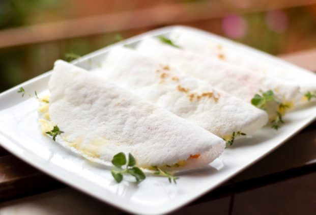

Tapioca

Tapioca is a traditional Brazilian dish made from cassava flour. It is a gluten-free and versatile snack that can be filled with a variety of delicious ingredients.
Ingredients:
- Hydrated Tapioca Starch
- Fillings of your choice (e.g., cheese, coconut, chocolate, etc.)
Instructions:
- Sift a portion of hydrated tapioca starch into a bowl.
- Using a spoon, sprinkle the tapioca onto the skillet, covering the entire surface with the starch.
- Smooth out the tapioca with the spoon to ensure that one side doesn't become larger than the other, making it flat and even.
- Smooth out the tapioca with the spoon to ensure that one side doesn't become larger than the other, making it flat and even.
- Heat in the skillet for about 5 minutes.
- Then, simply add the filling to one half of the skillet and fold the tapioca in half.
Homepage